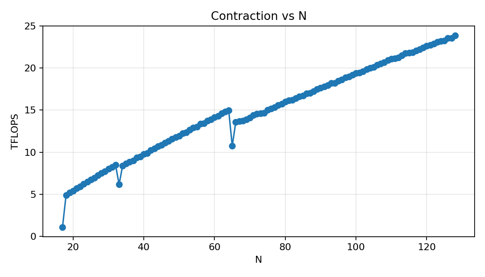
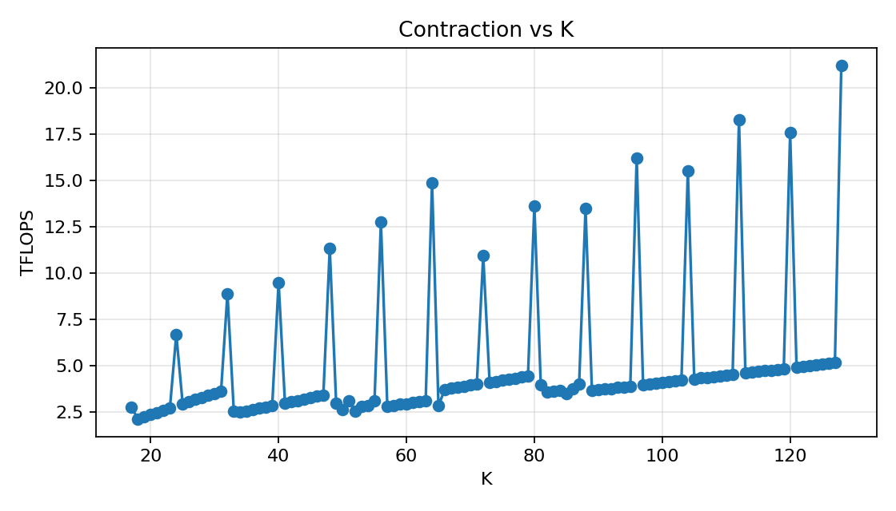

Tensor Contractions on GPUs
Task 1: Tiled Contraction Kernel Variants
a) Dimension Classification
The dimensions for the einsum string eabklxy, ecklyz -> eabcxz are classified as follows:
M:a,b,xN:c,zK:k,l,yC:e
b) cuTile Kernel: Sequentialize over k and l
We create three tensors A, B, and C with random dimension sizes and values.
For that we use a tensor_initialization() function that creates these tensors for us:
1def tensor_initialization() -> tuple[torch.Tensor, torch.Tensor, torch.Tensor]:
2 # Initialize random tensors
3 a = random.randint(4, 32)
4 b = random.randint(4, 32)
5 c = random.randint(4, 32)
6 e = random.randint(4, 32)
7 k = random.randint(4, 32)
8 l = random.randint(4, 32)
9 x = random.randint(4, 32)
10 y = random.randint(4, 32)
11 z = random.randint(4, 32)
12
13 size_A = e * a * b * k * l * x * y
14 size_B = e * c * k * l * y * z
15 size_C = e * a * b * c * x * z
16
17 while (size_A + size_B) * 2 + size_C * 4 > 34 * 1024**3:
18 a = random.randint(4, a)
19 b = random.randint(4, b)
20 c = random.randint(4, c)
21 e = random.randint(4, e)
22 k = random.randint(4, k)
23 l = random.randint(4, l)
24 x = random.randint(4, x)
25 y = random.randint(4, y)
26 z = random.randint(4, z)
27
28 size_A = e * a * b * k * l * x * y
29 size_B = e * c * k * l * y * z
30 size_C = e * a * b * c * x * z
31
32 A = torch.rand((e, a, b, k, l, x, y), dtype=torch.float16, device="cuda")
33 B = torch.rand((e, c, k, l, y, z), dtype=torch.float16, device="cuda")
34 C = torch.zeros((e, a, b, c , x, z), dtype=torch.float32, device="cuda")
35
36 return [A, B, C]
Inside this function we have a check that prevents us to create three tensors that exceed the memory limit of 32 GiB.
If our tensors exceed the limit, we simply generate a new random dimension size based on the current value.
As this procedure is wrapped inside a while-loop we guarantee to be within the memory limit.
The actual task was solved by creating a 1D-grid over the whole C tensor.
1def launch_tile_contraction_kl(A, B, C, tM, tN, tK):
2 # eabcxz
3 grid = (C.shape[0] * C.shape[1] * C.shape[2] * C.shape[3] * ct.cdiv(C.shape[4], tM) * ct.cdiv(C.shape[5], tN), 1, 1)
4
5 ct.launch(torch.cuda.current_stream(),
6 grid,
7 tile_contraction_kl,
8 (A, B, C, tM, tN, tK))
Based on this grid it was then possible to retrieve the block IDs of the respective dimensions involved in the computation.
1 # Indices C: Right to left (eabcxz)
2 z = bid % ct.cdiv(C.shape[5], tN)
3 bid = bid // ct.cdiv(C.shape[5], tN)
4
5 x = bid % ct.cdiv(C.shape[4], tM)
6 bid = bid // ct.cdiv(C.shape[4], tM)
7
8 c = bid % C.shape[3]
9 bid = bid // C.shape[3]
10
11 b = bid % C.shape[2]
12 bid = bid // C.shape[2]
13
14 a = bid % C.shape[1]
15 bid = bid // C.shape[1]
16
17 e = bid % C.shape[0]
The block ID compuation follows a simple principle.
As the fast dimension is the rightmost dimension in the einsum string, we start with index z and compute the block ID of z with the retrieved bid = ct.bid(0).
After computing the index, we reduce bid by the number of tiles we have for dimension z.
This concludes one iteration. We repeat this for every single index, going from left to right:
zxcbae
After retrieving these indices we set up our GEMM:
1 for k in range(A.shape[3]):
2 for l in range(A.shape[4]):
3 for y in range(ct.cdiv(A.shape[6], tK)):
4 tile_A = ct.load(A, index=(e, a, b, k, l, x, y), shape=(1, 1, 1, 1, 1, tM, tK), padding_mode=ct.PaddingMode.ZERO)
5 tile_B = ct.load(B, index=(e, c, k, l, y, z), shape=(1, 1, 1, 1, tK, tN), padding_mode=ct.PaddingMode.ZERO)
6
7 # Reshape due to rank mismatch
8 r_tile_A = ct.reshape(tile_A, (tM, tK))
9 r_tile_B = ct.reshape(tile_B, (tK, tN))
10
11 acc = ct.mma(r_tile_A, r_tile_B, acc)
12
13 o_acc = ct.reshape(acc.astype(C.dtype), (1, 1, 1, 1, tM, tN))
14 ct.store(C, index=(e, a, b, c, x, z), tile=o_acc)
15 return
Due to the reason that the ranks of tensor A and tensor B (and C) where not matching we decided to create an accumulation matrix acc of the shape (tM, tN).
The next thing we did was to set up the sequential K-type loops over k, l, and y, while y is only needed for the case that \(tK < y\).
As we had to create the accumulation with a new shape, we were forced to also reshape the loaded tiles from tensor A and B.
After going through all of the loops sequentially we then reshape our accumulated tensor back to the original shape, in order to store the result in our C tensor.
c) cuTile Kernel: Sequentialize over k, l and b
To additionally sequentialize the we first changed the grid by extracting the b dimension from the calculation.
1def launch_tile_contraction_klb(A, B, C, tM, tN, tK):
2 # eacxz
3 grid = (C.shape[0] * C.shape[1] * C.shape[3] * ct.cdiv(C.shape[4], tM) * ct.cdiv(C.shape[5], tN), 1, 1)
4
5 ct.launch(torch.cuda.current_stream(),
6 grid,
7 tile_contraction_klb,
8 (A, B, C, tM, tN, tK))
Reducing the grid dimension also means that we need to change the index calculation, as we don’t need to calculate the b block ID any more.
1 # Indices C: Right to left (eabcxz)
2 z = bid % ct.cdiv(C.shape[5], tN)
3 bid = bid // ct.cdiv(C.shape[5], tN)
4
5 x = bid % ct.cdiv(C.shape[4], tM)
6 bid = bid // ct.cdiv(C.shape[4], tM)
7
8 c = bid % C.shape[3]
9 bid = bid // C.shape[3]
10
11 a = bid % C.shape[1]
12 bid = bid // C.shape[1]
13
14 e = bid % C.shape[0]
In regards to the computation we add a new loop for the b dimension and also move the creation of the acc tile inside that loop.
1 for b in range(A.shape[2]):
2 acc = ct.zeros((tM, tN), dtype=torch.float32)
3
4 for k in range(A.shape[3]):
5 for l in range(A.shape[4]):
6 for y in range(ct.cdiv(A.shape[6], tK)):
7 tile_A = ct.load(A, index=(e, a, b, k, l, x, y), shape=(1, 1, 1, 1, 1, tM, tK), padding_mode=ct.PaddingMode.ZERO)
8 tile_B = ct.load(B, index=(e, c, k, l, y, z), shape=(1, 1, 1, 1, tK, tN), padding_mode=ct.PaddingMode.ZERO)
9
10 r_tile_A = ct.reshape(tile_A, (tM, tK))
11 r_tile_B = ct.reshape(tile_B, (tK, tN))
12
13 acc = ct.mma(r_tile_A, r_tile_B, acc)
14
15 o_acc = ct.reshape(acc.astype(C.dtype), (1, 1, 1, 1, tM, tN))
16 ct.store(C, index=(e, a, b, c, x, z), tile=o_acc)
To find one dimension configuration where the kernel from Task 1b) performed better, we did not need to experiment too much.
One possible configuration is (e=8, a=8, b=16, c=8, k=8, l=16, x=16, y=16, z=16).
On the other hand to find a kernel where the implementation of Task 1c) was better, was harder.
Our approach was too equally distribute the workload by sharing the output over the 48 streaming multiprocessors.
Further, we made sure that the b dimension is odd.
Finally we found a dimension configuration where the kernel from Task 1c) was slightly better: (e=16, a=8, b=5, c=6, k=8, l=8, x=8, y=8, z=8).
[expected 1b > 1c > 1d]
total memory: 0.07421875GiB
grid: 1b=32768 blocks, 1c=2048 blocks, 1d=32768 blocks
tile: tM=8, tN=8, tK=8
1b=46.091ms 1c=47.734ms 1d=213.975ms
Ranking: 1b > 1c > 1d
[expected 1c > 1b]
total memory: 0.00653076171875GiB
grid: 1b=15360 blocks, 1c=3072 blocks, 1d=15360 blocks
tile: tM=4, tN=4, tK=4
1b=5.898ms 1c=5.863ms 1d=8.908ms
Ranking: 1c > 1b > 1d
d) cuTile Kernel: GEMM Dimensions xyzl
In order for us to use the dimensions xyzl as GEMM dimensions, we switch back to the grid from Task 1b).
We also switch back to the block ID computation from Task 1b).
Inside the kernel we load tiles that span the full l dimension at once (using tL as a compile-time constant tile size).
For tensor A (shape eabklxy), the l dimension lies between k and x, so the loaded tile has shape (1, 1, 1, 1, tL, tM, tK).
We then permute the tile to swap l and x/M, bringing the M dimension before l and then reshape so that l and y are merged into a single K dimension.
For tensor B (shape ecklyz), l and y are already adjacent, so only a reshape is needed.
By combining them we essentially compute a xyzl GEMM.
1 for k in range(A.shape[3]):
2 for y in range(ct.cdiv(A.shape[6], tK)):
3 tile_A = ct.load(A, index=(e, a, b, k, 0, x, y), shape=(1, 1, 1, 1, tL, tM, tK), padding_mode=ct.PaddingMode.ZERO)
4 tile_B = ct.load(B, index=(e, c, k, 0, y, z), shape=(1, 1, 1, tL, tK, tN), padding_mode=ct.PaddingMode.ZERO)
5
6 # Permute tile_A: swap l (dim 4) and x/M (dim 5)
7 # (1, 1, 1, 1, tL, tM, tK) -> (1, 1, 1, 1, tM, tL, tK)
8 p_tile_A = ct.permute(tile_A, (0, 1, 2, 3, 5, 4, 6))
9
10 # Reshape to merge l and y into K dimension
11 r_tile_A = ct.reshape(p_tile_A, (tM, tL * tK))
12 r_tile_B = ct.reshape(tile_B, (tL * tK, tN))
13
14 acc = ct.mma(r_tile_A, r_tile_B, acc)
15
16 o_acc = ct.reshape(acc.astype(C.dtype), (1, 1, 1, 1, tM, tN))
17 ct.store(C, index=(e, a, b, c, x, z), tile=o_acc)
The launch function passes the original tensors directly and provides tL (rounded up to the next power of two, with out-of-bounds accesses handled by PaddingMode.ZERO) as an additional compile-time constant.
1def launch_tile_contraction_xyzl(A, B, C, tM, tN, tK):
2 # eabcxz
3 grid = (C.shape[0] * C.shape[1] * C.shape[2] * C.shape[3] * ct.cdiv(C.shape[4], tM) * ct.cdiv(C.shape[5], tN), 1, 1)
4
5 tL = next_power_of_two(A.shape[4])
6
7 ct.launch(torch.cuda.current_stream(),
8 grid,
9 tile_contraction_xyzl,
10 (A, B, C, tM, tN, tK, tL))
Similarly to Task 1c) <1c_bench> we could use the same dimension configuration to outperform the kernel from Task 1d) with the kernel from Task 1b).
To find a dimension configuration where the kernel from Task 1d) outperforms the kernel from Task 1b) we reduced the size of the kernel xyzl compared to the remaining dimensions.
The idea was to make the workload big enough for the kernel from Task 1d) to be equally utilized as the kernel from Task 1b), while performing less kernel calls.
[expected 1b > 1c > 1d]
total memory: 0.07421875GiB
grid: 1b=32768 blocks, 1c=2048 blocks, 1d=32768 blocks
tile: tM=8, tN=8, tK=8
1b=46.091ms 1c=47.734ms 1d=213.975ms
Ranking: 1b > 1c > 1d
[expected 1d > 1b]
total memory: 0.009567663073539734GiB
grid: 1b=151200 blocks, 1c=15120 blocks, 1d=151200 blocks
tile: tM=2, tN=2, tK=2
1b=28.395ms 1c=28.570ms 1d=25.887ms
Ranking: 1d > 1b > 1c
e) cuTile Kernel: 3D GEMM Kernel using exyz
Creating a 3D exyz GEMM kernel we first permuted our tensors by moving the e dimension closer to the right:
1 ct.launch(torch.cuda.current_stream(),
2 grid,
3 tile_contraction_exyz,
4 (p_A, p_B, p_C, tM, tN, tK, tC))
5
6 # Permute C again: abcexz -> eabcxz and copy back in-place
7 C.copy_(torch.permute(p_C, (3, 0, 1, 2, 4, 5)).contiguous())
Secondly, we introduced a new tile size called tC which is used for tiling the e dimension.
Therefore, our grid changed as well.
1
2# ===========================================================================
3# Shared Code
4# ===========================================================================
5
6def benchmark():
7 # eabcxz
Inside the kernel we adjust the block ID calculation slightly, because of the positioning of dimension e and the new tile shape tC.
1 bid = bid // C.shape[2]
2
3 b = bid % C.shape[1]
4 bid = bid // C.shape[1]
5
6 a = bid % C.shape[0]
7
8 acc = ct.zeros((tC, tM, tN), dtype=torch.float32)
9
10 for k in range(A.shape[2]):
11 for l in range(A.shape[3]):
12 for y in range(ct.cdiv(A.shape[6], tK)):
13 tile_A = ct.load(A, index=(a, b, k, l, e, x, y), shape=(1, 1, 1, 1, tC, tM, tK), padding_mode=ct.PaddingMode.ZERO)
14 tile_B = ct.load(B, index=(c, k, l, e, y, z), shape=(1, 1, 1, tC, tK, tN), padding_mode=ct.PaddingMode.ZERO)
15
16 # Reshape due to rank mismatch
17 r_tile_A = ct.reshape(tile_A, (tC, tM, tK))
To perform a correct 3D GEMM we also change the indices and shapes for the tiles of A, B, acc and C.
1
2 acc = ct.mma(r_tile_A, r_tile_B, acc)
3
4 o_acc = ct.reshape(acc.astype(C.dtype), (1, 1, 1, tC, tM, tN))
5 ct.store(C, index=(a, b, c, e, x, z), tile=o_acc)
6 return
7
8
9def launch_tile_contraction_exyz(A, B, C, tM, tN, tK, tC):
10 # A: eabklxy -> abklexy
11 p_A = torch.permute(A, (1, 2, 3, 4, 0, 5, 6)).contiguous()
12
13 # B: ecklyz -> ckleyz
14 p_B = torch.permute(B, (1, 2, 3, 0, 4, 5)).contiguous()
15
16 # C: eabcxz -> abcexz
The last thing is to bring the output matrix C back into its normal shape.
1 # (name, e, a, b, c, k, l, x, y, z)
2 ("expected 1b > 1c > 1d", 8, 8, 16, 8, 8, 16, 16, 16, 16),
Task 2: Fused vs. Separate Elementwise Multiplication
a) Implementing the Fused Kernel
As a starting point, we used the kernel from Task 1b) and added another input tensor D to both the kernel and the kernel launch functions.
After the loops for the contraction, we load a tile from tensor D and perform the elementwise multiplication with the tile from C before storing the result back to global memory.
1for k in range(A.shape[3]):
2 for l in range(A.shape[4]):
3 for y in range(ct.cdiv(A.shape[6], tK)):
4 tile_A = ct.load(A, index=(e, a, b, k, l, x, y), shape=(1, 1, 1, 1, 1, tM, tK), padding_mode=ct.PaddingMode.ZERO)
5 tile_B = ct.load(B, index=(e, c, k, l, y, z), shape=(1, 1, 1, 1, tK, tN), padding_mode=ct.PaddingMode.ZERO)
6
7 # Reshape due to rank mismatch
8 r_tile_A = ct.reshape(tile_A, (tM, tK))
9 r_tile_B = ct.reshape(tile_B, (tK, tN))
10
11 acc = ct.mma(r_tile_A, r_tile_B, acc)
12
13# Fused elementwise multiplication with D
14tile_D = ct.load(D, index=(e, a, b, c, x, z), shape=(1, 1, 1, 1, tM, tN), padding_mode=ct.PaddingMode.ZERO)
15r_tile_D = ct.reshape(tile_D, (tM, tN))
16acc = acc * r_tile_D
17
18o_acc = ct.reshape(acc.astype(C.dtype), (1, 1, 1, 1, tM, tN))
19ct.store(C, index=(e, a, b, c, x, z), tile=o_acc)
20return
b) Implementing the Separate Elementwise Multiplication Kernel
This kernel is rather simple, as we only have two input tensors, C and D.
These even share the same dimensions, so we can directly load tiles from both tensors, perform the elementwise multiplication and store the result back to global memory.
1@ct.kernel
2def elem_mult_kernel(C, D, tM: ConstInt, tN: ConstInt):
3 # eabcxz, eabcxz -> eabcxz
4 bid = ct.bid(0)
5
6 z = bid % ct.cdiv(C.shape[5], tN)
7 bid = bid // ct.cdiv(C.shape[5], tN)
8
9 x = bid % ct.cdiv(C.shape[4], tM)
10 bid = bid // ct.cdiv(C.shape[4], tM)
11
12 c = bid % C.shape[3]
13 bid = bid // C.shape[3]
14
15 b = bid % C.shape[2]
16 bid = bid // C.shape[2]
17
18 a = bid % C.shape[1]
19 bid = bid // C.shape[1]
20
21 e = bid % C.shape[0]
22
23 tile_C = ct.load(C, index=(e, a, b, c, x, z), shape=(1, 1, 1, 1, tM, tN), padding_mode=ct.PaddingMode.ZERO)
24 tile_D = ct.load(D, index=(e, a, b, c, x, z), shape=(1, 1, 1, 1, tM, tN), padding_mode=ct.PaddingMode.ZERO)
25
26 r_tile_C = ct.reshape(tile_C, (tM, tN))
27 r_tile_D = ct.reshape(tile_D, (tM, tN))
28
29 result = r_tile_C * r_tile_D
30
31 ct.store(C, index=(e, a, b, c, x, z), tile=ct.reshape(result, (1, 1, 1, 1, tM, tN)))
32 return
The launch function for this kernel is no different than the one for the fused kernel, as we can use the same grid configuration. As for the contraction, we use the same kernel as in Task 1b).
For the benchmark, we use the following dimension configuration: e=4, a=4, b=4, c=8, k=8, l=8, x=64, y=32, z=128.
The reason for this is that we were supposed to match the FLOP count of a 2048 x 2048 matrix multiplication, which is 2 * 2048^3 = 17,179,869,184 FLOPs.
For the chosen dimension configuration, we get the same result: 2 * (4*4*4*8*64*128) * (8*8*32) = 17,179,869,184 FLOPs.
We then run the benchmark:
1# Benchmark
2warmup, rep = 100, 1000
3t_fused = triton.testing.do_bench(
4 lambda: launch_fused_elem_mult_kernel(A, B, C, D, tM, tN, tK),
5 warmup=warmup, rep=rep)
6
7def no_fusion():
8 launch_tile_contraction_kl(A, B, C, tM, tN, tK)
9 launch_elem_mult_kernel(C, D, tM, tN)
10
11t_no_fusion = triton.testing.do_bench(no_fusion, warmup=warmup, rep=rep)
and get the following results:
Benchmark:
Fused : 7.447 ms
Separate: 7.582 ms
Speedup : 1.02x
The speedup is rather small and negligible,
which is not surprising given the fact that the speedup from fusion comes from avoiding a global memory round-trip for C
(the contraction result is kept in registers and multiplied before being written).
If we look at the size of the output tensor C, we see that it has e*a*b*c*x*z = 4*4*4*8*64*128 = 4.194.304 elements,
which is 4.194.304 * 4 bytes = 16 MiB.
The total traffic of reading and writing C is then around 32 MiB, which is very small compared to the bandwidth of the GPU.
Task 3: GEMM Dimension Size Sweep
a) Implementing the contraction kernel
For this task, we were supposed to implement a contraction kernel that computes ackm, bcnk -> abnm with arbitrary dimension sizes of m, n and k.
The other dimensions are fixed to a=16, b=16 and c=32.
The implementation of the kernel is rather straightforward, as we can reuse a lot of the code from the previous tasks.
1@ct.kernel
2def tile_contraction(A, B, C, tM: ConstInt, tN: ConstInt, tK: ConstInt):
3 bid = ct.bid(0)
4
5 # Indices C: Right to left (abnm)
6 m = bid % ct.cdiv(C.shape[3], tM)
7 bid = bid // ct.cdiv(C.shape[3], tM)
8
9 n = bid % ct.cdiv(C.shape[2], tN)
10 bid = bid // ct.cdiv(C.shape[2], tN)
11
12 b = bid % C.shape[1]
13 bid = bid // C.shape[1]
14
15 a = bid % C.shape[0]
16
17 acc = ct.zeros((tN, tM), dtype=torch.float32)
18
19 for c in range(A.shape[1]):
20 for k in range(ct.cdiv(A.shape[2], tK)):
21 tile_A = ct.load(A, index=(a, c, k, m), shape=(1, 1, tK, tM), padding_mode=ct.PaddingMode.ZERO)
22 tile_B = ct.load(B, index=(b, c, n, k), shape=(1, 1, tN, tK), padding_mode=ct.PaddingMode.ZERO)
23
24 # Reshape due to rank mismatch
25 r_tile_A = ct.reshape(tile_A, (tK, tM))
26 r_tile_B = ct.reshape(tile_B, (tN, tK))
27
28 acc = ct.mma(r_tile_B, r_tile_A, acc)
29
30 o_acc = ct.reshape(acc.astype(C.dtype), (1, 1, tN, tM))
31 ct.store(C, index=(a, b, n, m), tile=o_acc)
32 return
b) Performing the sweep
Both benchmarks use the same function, where the dimension to be swept over is set to zero. In each iteration of the sweep, we create new random tensors with the current dimension size and launch the kernel to benchmark it. The benchmark uses a warmup time of 100 ms and a repetition time of 1000 ms. After the benchmark, we compute the achieved TFLOPS and store it for plotting. The plot is then created with Matplotlib, where we plot the achieved TFLOPS against the swept dimension size. Lastly, we also save the results in a CSV file for further analysis.
1def size_sweep(m, n, k):
2 warmup, rep = 100, 1000
3
4 if n == 0:
5 Ns = []
6 compute = []
7
8 for l_n in range(17, 129):
9 print(f"Iteration: {l_n}")
10 bench_A = torch.rand((a, c, k, m), dtype=torch.float16, device="cuda")
11 bench_B = torch.rand((b, c, l_n, k), dtype=torch.float16, device="cuda")
12 bench_C = torch.zeros((a, b, l_n, m), dtype=torch.float16, device="cuda")
13
14 # Initialize tile sizes
15 bench_tM = next_power_of_two(bench_A.shape[3] // 2)
16 bench_tN = next_power_of_two(bench_B.shape[2] // 2)
17 bench_tK = next_power_of_two(bench_B.shape[3] // 2)
18
19 bench_ms = triton.testing.do_bench(
20 lambda: launch_contraction_kernel(bench_A, bench_B, bench_C, bench_tM, bench_tN, bench_tK),
21 warmup=warmup,
22 rep=rep
23 )
24
25 flops = 2 * a * b * l_n * m * c * k
26 tflops = (flops / 1e12) / (bench_ms / 1e3)
27
28 Ns.append(l_n)
29 compute.append(tflops)
30
31 plt.figure(figsize=(7, 4))
32 plt.plot(Ns, compute, marker="o")
33 plt.title("Contraction vs N")
34 plt.xlabel("N")
35 plt.ylabel("TFLOPS")
36 plt.grid(True, alpha=0.3)
37 plt.tight_layout()
38 plt.savefig("task3_n_throughput.png", dpi=160)
39
40 with open("task3_n_throughput.csv", "w", newline="") as f:
41 writer = csv.writer(f)
42 writer.writerow(["N", "TFLOPS"])
43 writer.writerows(zip(Ns, compute))
44
45 elif k == 0:
46 Ks = []
47 compute = []
48
49 for l_k in range(17, 129):
50 print(f"Iteration: {l_k}")
51 bench_A = torch.rand((a, c, l_k, m), dtype=torch.float16, device="cuda")
52 bench_B = torch.rand((b, c, n, l_k), dtype=torch.float16, device="cuda")
53 bench_C = torch.zeros((a, b, n, m), dtype=torch.float16, device="cuda")
54
55 # Initialize tile sizes
56 bench_tM = next_power_of_two(bench_A.shape[3] // 2)
57 bench_tN = next_power_of_two(bench_B.shape[2] // 2)
58 bench_tK = next_power_of_two(bench_B.shape[3] // 2)
59
60 bench_ms = triton.testing.do_bench(
61 lambda: launch_contraction_kernel(bench_A, bench_B, bench_C, bench_tM, bench_tN, bench_tK),
62 warmup=warmup,
63 rep=rep
64 )
65
66 flops = 2 * a * b * n * m * c * l_k
67 tflops = (flops / 1e12) / (bench_ms / 1e3)
68
69 Ks.append(l_k)
70 compute.append(tflops)
71
72 plt.figure(figsize=(7, 4))
73 plt.plot(Ks, compute, marker="o")
74 plt.title("Contraction vs K")
75 plt.xlabel("K")
76 plt.ylabel("TFLOPS")
77 plt.grid(True, alpha=0.3)
78 plt.tight_layout()
79 plt.savefig("task3_k_throughput.png", dpi=160)
80
81 with open("task3_k_throughput.csv", "w", newline="") as f:
82 writer = csv.writer(f)
83 writer.writerow(["K", "TFLOPS"])
84 writer.writerows(zip(Ks, compute))
Benchmark 1
For the first benchmark, we swept over the n dimension, while keeping the other dimensions fixed to m=64 and k=64:
1size_sweep(64, 0, 64)
Here, we achieved the following results:

Within each constant tN segment the achieved TFLOPS grows roughly linearly with n.
The GPU runtime stays approximately constant across a segment because the tile count and tile size are fixed,
while the counted FLOPs scale proportionally with n.
Three drops are visible at n=17, n=33, and n=65.
At each of these points cdiv(n, tN) jumps from 2 to 3 tiles:
n=17,tN=8: 3 tiles, last tile contains only 1 of 8 elements.n=33,tN=16: 3 tiles, last tile contains only 1 of 16 elements.n=65,tN=32: 3 tiles, last tile contains only 1 of 32 elements.
The kernel executes a nearly empty third tile for every output block, performing MMA over mostly zero padded data while the FLOPS numerator only counts the real elements.
At n=18, n=34, and n=66, tN doubles because n // 2 crosses a power of two boundary (8 to 9, 16 to 17, and 32 to 33 respectively),
so the tile count returns to 2.
However, the performance does not immediately return to the level before the drop.
At n=66 for example, tN=64 and the two tiles together span 128 elements, but only 66 of these are real data.
The GPU does more actual work per block than at n=64 with tN=32, but the counted FLOPS are nearly the same.
As a result, n=66 achieves 13.56 TFLOPS while n=64 achieved 14.99 TFLOPS, and performance only recovers to that level around n=75.
From there, the TFLOPS continue growing linearly.
Benchmark 2
For the second benchmark, we swept over the k dimension, while keeping the other dimensions fixed to m=64 and n=64:
1size_sweep(64, 64, 0)
Here, we achieved the following results:

For the most part, the FLOPs increase linearly with the size of the k dimension,
however we have frequent spikes in performance.
The first spike is at k=24 and then we can observe spikes at increments of 8 (k=32, k=40, k=48, etc.).
We suspect the primary reason for these spikes to be, that there are some alignment requirements for the A and B matrices regarding the new tcgen05.mma instructions on Blackwell GPUs.
For example, considering that A and B are of type FP16 the alignment of A and B are 8 elements (or multiple of 8).
Therefore, if k is a multiple of 8 all tiles are fully aligned.
In the case that k is not a multiple of 8, cuTile’s compiler pads zeros until the next valid hardware k granularity / selected tile size.
This causes the hardware to hardware to perform MMA operations on these zero-padded elements, wasting compute cycles and thereby reduing the throughput.